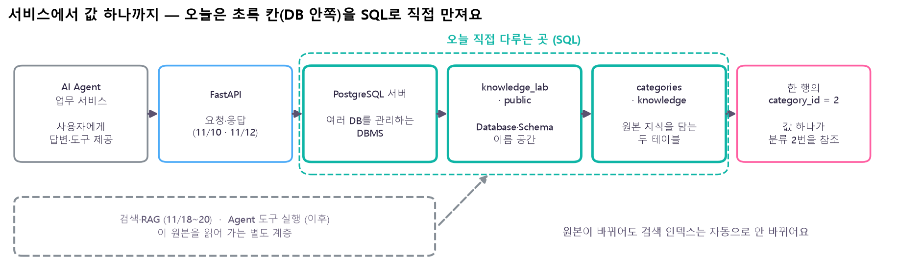
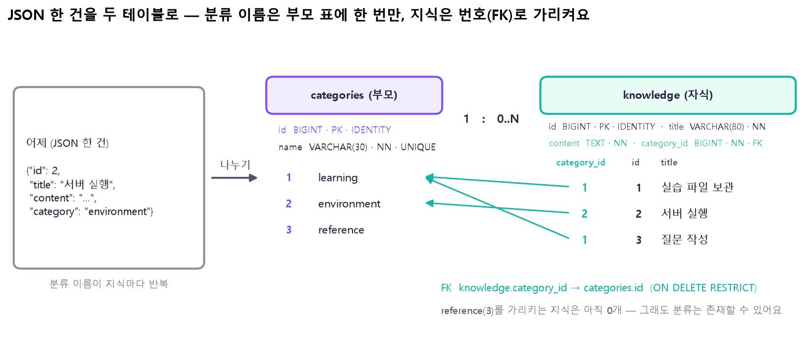
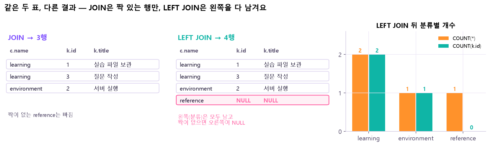
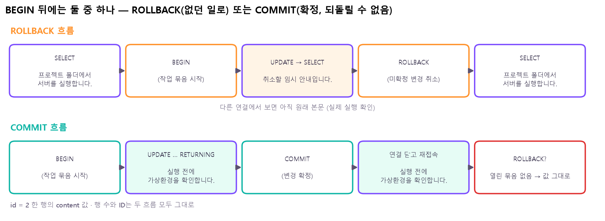
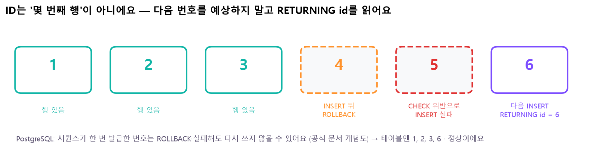

본문에는 핵심 SQL 한두 줄만 남겼어요. 명령어 사전의 결과값은 같은 S0 데이터를 실제로 실행해 얻은 거예요.
📦 필요한 프로그램
오늘은 pip install이 없어요. 파이썬이 아니라 DB 서버 프로그램을 설치하고, 그 서버에 SQL을 보내는 접속 도구를 써요.
프로그램
뭐 하는 애?
어디서 써?
PostgreSQL 18 (Server)
데이터를 실제로 저장하고 SQL·규칙을 처리하는 DBMS. 수업 기준은 18 계열
설치하면 Windows 서비스로 뒤에서 계속 켜져 있어요
pgAdmin 4
창(GUI)으로 서버에 접속해 SQL을 보내고 결과를 보는 클라이언트
Query Tool에서 SQL 실행 → Data Output·Messages 확인
psql (Command Line Tools)
터미널에서 쓰는 클라이언트
PowerShell에서 psql -U postgres -d knowledge_lab
psycopg 등 (내일)
파이썬(FastAPI)에서 PostgreSQL에 접속하는 드라이버
오늘은 안 씀 — 11/12 연동 때
🔧 설치 · 확인 (PowerShell)
# 공식 Windows 안내 → EDB 설치 프로그램 (Server · pgAdmin · Command Line Tools 선택)
psql --version # 클라이언트(psql) 버전
Get-Service postgresql* # 서버가 서비스로 Running 인지
psql -U postgres -h localhost -p 5432 # 접속 → 비밀번호 입력 → postgres=# 프롬프트
⚠️ 서버 비밀번호는 비밀이에요. 소스 코드·Git·제출물·스크린샷에 실제 값을 남기지 않아요. 그리고 pgAdmin 창을 닫는 것 ≠ PostgreSQL 서버를 끄는 것 — 서버는 서비스로 계속 돌아요.
🤔 왜 psql --version과 SELECT version()이 따로 있어? — 앞의 것은 내 컴퓨터의 접속 도구 버전, 뒤의 것은 접속한 서버의 버전이에요. 다른 컴퓨터의 서버에 붙으면 둘이 다를 수 있어요.
이거 어디에 써?
신입이 "개발환경 설정 절차 알려 주세요"라고 물으면 나중엔 AI Agent가 지식 조회 도구로 안내문을 찾아 답해요. 그런데 안내문이 바뀌었는데 예전 내용을 읽어 가면 안 되죠. 그래서 검색·생성 이전에, 사람이 관리하는 원본 지식이 정확하고 추적 가능해야 해요. 오늘은 그 원본을 표와 규칙으로 관리해요.
🗂️
원본 지식 저장제목·본문·분류를 규칙과 함께 보관
🔗
관계 관리분류 이름을 한 곳에서 관리하고 번호로 연결
🛡️
안전한 변경잘못된 값 거부 · 실패하면 통째로 취소
🔎
추적Agent가 어떤 ID의 안내를 참고했는지 남길 근거

무엇을 보나: 왼쪽 서비스에서 오른쪽 값 하나까지 점점 확대했어요. 초록 점선 안(서버 → DB·스키마 → 테이블)이 오늘 SQL로 직접 만지는 곳이에요. 아래 회색 점선의 검색·RAG·Agent는 이 원본을 읽어 가는 별도 계층이고 이후 수업이에요. 🤔 왜 이렇게 나눠 봐? 문제가 생겼을 때 "서버에 못 붙은 건지, 다른 DB에 붙은 건지, 표가 없는 건지, 값이 틀린 건지"를 층별로 좁힐 수 있어요.
오늘 · PostgreSQL SQL / Index
이후 · Embedding / Vector Search
찾는 방법
WHERE category_id = 1처럼 조건이 정확히 맞는 행
질문과 뜻이 가까운 문서 조각
인덱스
B-tree 인덱스 — 조건에 맞는 행을 빨리 찾는 길
벡터 인덱스 — 가까운 벡터를 빨리 찾는 길
책임
원본의 저장 규칙·관계·변경 확정
근거 후보를 골라 LLM에 전달
⚠️ B-tree 인덱스를 만들었다고 의미 검색이 되는 건 아니에요.LIKE '%실행%'도 글자 포함 검색일 뿐이라 "구동"은 못 찾아요. 그리고 원본을 고치거나 지워도 나중의 벡터 인덱스는 자동으로 안 바뀌어요.
① DB · DBMS · 접속 도구
용어
오늘의 예
역할
Database
knowledge_lab
지식·분류의 구조와 데이터를 담는 업무 공간
DBMS / RDBMS
PostgreSQL
표 형태의 데이터를 관리하고 SQL·규칙을 처리하는 프로그램
Client
pgAdmin / psql
서버에 SQL을 보내고 결과를 받는 도구
SQL
SELECT · INSERT …
구조를 정의하고 데이터를 읽고 바꾸는 언어
이름 공간은 Server ⊃ Database ⊃ Schema ⊃ Table이에요. knowledge_lab에 접속하면 public 스키마의 knowledge 표를 public.knowledge(줄여서 knowledge)로 불러요. Schema는 같은 DB 안에서 표 이름을 묶는 이름표지 디스크 폴더가 아니에요.
접속 값
예시
뜻
Host
localhost
지금 이 컴퓨터의 서버
Port
5432
설치할 때 정한 서버 포트 (기본값)
Database
knowledge_lab
오늘의 개인 학습 DB
User
postgres
설치 확인용 관리자 계정. 실제 앱은 따로 만든 계정을 써요
Password
(본인이 정한 값)
서버 인증 · 결과물에는 숨겨요
🤔 왜 SELECT 1만 보면 안 돼? — 1이 나오면 "어떤 서버엔가 붙었다"는 것만 알려 줘요. 실수로 postgres DB에 붙은 채 표를 만들면 나중에 knowledge_lab에서 "relation does not exist"가 나요. 그래서 첫 SQL은 current_database()로 지금 DB 이름부터 봐요. 그리고 pgAdmin의 서버 등록 이름은 화면에 보이는 별칭일 뿐이라, 그 이름을 적는다고 DB가 생기지 않아요.
변경 실습 때 Auto commit 켬 · Auto rollback on error 끔. BEGIN부터 끝까지 같은 Query Tool 창에서
🤔 결과가 0행이면 실패야? — 아니에요. "조건에 맞는 행이 없다"는 정상 결과예요. 오류는 Messages에 빨간 메시지로 따로 나와요. 그리고 DB를 직접 실행할 때는 HTTP 상태 코드가 없어요 — 200·404는 FastAPI의 일이에요.
② 지식 조회 — SELECT · WHERE · ORDER BY
오늘 새 DB에 미리 넣어 둔 가상 초기 데이터를 S0라고 불러요. (어제 JSON 파일이 자동으로 옮겨진 게 아니에요.)
categories · 분류 3건
id
name
1
learning
2
environment
3
reference
knowledge · 지식 3건 (content 생략)
id
title
category_id
1
실습 파일 보관
1
2
서버 실행
2
3
질문 작성
1
한 행(Row) = 지식 한 건, 한 열(Column) = 공통 항목 한 종류, 값 = 그 행·열이 만나는 칸이에요. 지식 2번 행의 category_id 값 2는 "분류 2번(environment)"을 가리켜요. 그리고 reference(3번)를 가리키는 지식은 아직 없어요.
SQL은 업무 질문으로 읽어요
"어느 표에서 어떤 행을 골라 어떤 열을 어떤 순서로 보고 싶은가?"
순서
절
질문
1
FROM
어느 테이블?
2
WHERE
어떤 조건의 행?
3
SELECT
어떤 열?
4
ORDER BY
어떤 순서? (DESC = 큰 것부터) · LIMIT n = 최대 n행
🤔 쓰는 순서(SELECT가 먼저)와 왜 달라? — 위 순서는 뜻을 이해하는 순서예요. 실제로 DB가 어떤 순서·방법으로 처리할지는 실행계획이 정해요(⑧). 그리고 ORDER BY가 없으면 결과 순서는 보장되지 않아요 — 순서가 중요하면 꼭 써요.
SELECT NULL IS NULL, '' IS NULL, char_length(''); -- true, false, 0
③ 두 테이블 설계 — PK · FK · ERD · DDL

무엇을 보나: 어제 JSON은 지식마다 "category": "environment" 같은 분류 이름을 반복해서 들고 있었어요. 오늘은 분류 이름을 부모 표(categories)에 한 번만 두고, 지식은 category_id번호로 가리켜요(초록 화살표). 분류 하나에 지식이 0개 이상(1 : 0..N) — reference처럼 0개여도 돼요. 🤔 왜 나눠? 분류 이름을 고칠 때 한 곳만 바꾸면 되고, 오타 난 분류("enviroment")가 몰래 생기는 걸 FK가 막아 줘요. 대신 볼 때는 JOIN으로 다시 붙여요(⑤).
개념
하는 일
이번 예시
PK (Primary Key)
각 행을 유일하게 식별 · NULL 불가
knowledge.id, categories.id
FK (Foreign Key)
참조하는 부모 값이 실제로 있는지 검사
knowledge.category_id → categories.id
IDENTITY
값을 생략하면 DB가 번호를 발급
id 자동 생성 (유일성 보장은 PK의 일)
JOIN
조회할 때 조건에 맞는 행을 붙여 보여 줌
지식 목록에 분류 이름 붙이기
⚠️ PK · FK · JOIN은 서로 다른 일이에요. FK가 있다고 JOIN이 자동으로 되지 않고, JOIN은 FK가 없어도 쓸 수 있어요. FK는 저장할 때 검사, JOIN은 읽을 때 연결이에요. 그리고 ID는 행 수나 목록의 위치가 아니에요 — 삭제·취소가 있으면 번호가 비어요(⑦).
자료형과 저장 규칙 (데이터 계약)
필드
DB 표현
규칙
id
BIGINT + IDENTITY + PK
DB가 발급 · 응답의 실제 ID로 추적
title
VARCHAR(80) + NOT NULL + CHECK
1~80자 · 같은 제목 허용 (UNIQUE 아님)
content
TEXT + NOT NULL + CHECK
1~2,000자
categories.name
VARCHAR(30) + NOT NULL + UNIQUE
1~30자 · 분류 이름 중복 금지
category_id
BIGINT + NOT NULL + FK
등록된 분류만 참조
🤔 왜 제목엔 UNIQUE를 안 걸어? — 어제 API도 같은 제목을 막지 않았어요. 규칙을 DB로 옮기면서 몰래 바꾸면, 어제는 되던 요청이 오늘은 실패해요. 그래서 "제목은 ID 대신 쓸 수 없다 — 찾을 땐 ID로"가 원칙이에요. 반대로 분류 이름은 하나여야 이름으로 ID를 찾을 수 있어서 UNIQUE예요.
💡 DDL(Data Definition Language)은 CREATE TABLE처럼 구조를 만드는 SQL, DML은 INSERT·UPDATE처럼 데이터를 바꾸는 SQL이에요. 부모(categories)를 먼저 만들어야 자식의 FK가 가리킬 곳이 생겨요.
INSERT INTO categories (name) VALUES ('learning'), ('environment'), ('reference') RETURNING id, name;
INSERT INTO knowledge (title, content, category_id) SELECT '실습 파일 보관', '...', id FROM categories WHERE name = 'learning';
💡 나중에 태그가 여러 개 필요해지면? 지식 하나에 태그 여러 개, 태그 하나에 지식 여러 개 = N:M 관계예요. 이건 FK 한 칸으로 못 담아서 가운데에 knowledge_tags(knowledge_id FK, tag_id FK) 연결 표를 두고, 두 열의 조합을 PK로 해 같은 짝이 두 번 들어가는 걸 막아요. 오늘 필수는 아니고 설계 예시예요.
④ 바꾸기 — INSERT · UPDATE · DELETE · RETURNING
변경 SQL은 확인하고 → 바꾸고 → 다시 확인해요.
단계
SQL
확인할 것
1 · 대상 조회
같은 WHERE로 먼저 SELECT
바꿀 행의 실제 ID·현재 값
2 · 묶음 시작
BEGIN
취소할 수 있는 상태
3 · 변경
INSERT / UPDATE / DELETE + RETURNING
어느 행이 어떻게 바뀌었나
4 · 끝내기
COMMIT 또는 ROLLBACK → 다시 SELECT
확정됐나 / 원래대로인가
🤔 왜 RETURNING을 붙여? — INSERT만 하면 "1행 넣음"만 알려 줘서 몇 번 ID가 발급됐는지 다시 찾아야 해요. RETURNING id는 바뀐 행을 그 자리에서 돌려줘요. "아마 4번이겠지" 하고 다음 ID를 예상하면 안 돼요 — 취소·실패가 있으면 번호가 건너뛰어요.
DELETE FROM knowledge WHERE id = 3 RETURNING id, title;
⚠️ UPDATE·DELETE에서 WHERE를 빼면 표의 모든 행이 대상이에요. 그래서 같은 조건의 SELECT를 먼저 돌려 대상 행 수를 보고, 연습은 BEGIN 안에서 해요. DELETE는 행만 지우고 표 구조는 남아요(구조까지 지우는 건 DROP — 본 데이터엔 안 써요).
0행 · 오류 · HTTP 응답은 다른 층이에요
상황
오늘 SQL 결과
내일 API가 정할 것
없는 ID를 SELECT
0행 · SQL은 정상
상세면 404, 목록이면 빈 배열 등
없는 ID를 UPDATE
UPDATE 0 / RETURNING 0행
"성공"이라고 할지 404로 할지
정상 INSERT
생성된 행과 실제 ID
201 + 그 행
잘못된 참조·빈 본문
DB 오류 · 변경 미확정
예외를 잡아 응답으로 바꾸기
🤔 SQL이 404를 보내 주면 편하지 않아? — DB는 "0행"이라는 사실만 알려 줘요. 그게 "없는 지식"(404)인지 "검색 결과 없음"(200 + [])인지는 API의 약속이라 FastAPI가 정해요. 층마다 책임이 달라야 나중에 DB를 바꿔도 API 약속이 그대로예요.
⑤ 연결해서 읽기 — JOIN · LEFT JOIN · GROUP BY

무엇을 보나: 같은 두 표를 붙여도 결과가 달라요. JOIN(INNER)은 ON 조건에 짝이 있는 행만 → 3행, 지식이 없는 reference는 사라져요. LEFT JOIN은 왼쪽 표(분류)를 모두 남기고 짝이 없으면 오른쪽 칸을 NULL로 채워요 → 4행(분홍 줄). 오른쪽 막대는 그 4행을 분류별로 센 결과예요 — COUNT(*)는 NULL 줄도 한 행이라 reference를 1, COUNT(k.id)는 NULL을 안 세서 0. 🤔 그래서? "분류별 지식 수"를 물으면 COUNT(k.id)가 정답이에요. 값은 S0를 실제로 실행한 결과예요.
표현
뜻
FROM knowledge AS k
k는 표의 별칭 — k.id처럼 어느 표의 열인지 밝힐 때
JOIN categories AS c ON c.id = k.category_id
어떤 값끼리 짝을 맞출지
c.name AS category
결과 열 이름 바꾸기
GROUP BY c.id, c.name
분류별로 묶기 — 결과 한 행 = 분류 한 개
HAVING COUNT(k.id) >= 2
묶은 뒤 그룹 조건 (WHERE는 묶기 전 행 조건)
🤔 JOIN 결과에 learning이 두 번 나오는데 중복 아니야? — 결과 한 행은 여전히 지식 한 건이에요. 지식 1·3이 둘 다 learning이라 이름이 두 번 보이는 건 정상적인 관계 결과예요. 반대로 GROUP BY를 하면 한 행의 단위가 분류로 바뀌어요. SQL을 읽을 때 "지금 결과 한 행은 무엇 하나인가?"를 먼저 물어요.
⚠️ LEFT JOIN 뒤에 오른쪽 표 조건을 WHERE에 쓰면 NULL로 채운 줄이 걸러져서 0개인 분류가 사라져요 — 결과적으로 INNER JOIN처럼 돼요. 빈 분류를 살리려면 그 조건을 ON 안으로 옮겨요. (명령어 사전에 실제 결과 비교가 있어요.)
⑥ 제약조건 — DB가 거부하게 하기
오늘의 SQL은 FastAPI를 거치지 않고 DB로 바로 가요. 그래서 API의 입력 검증(Pydantic)과 별개로 DB에도 규칙이 있어야 해요.
흐름
오늘
pgAdmin / psql → DB 제약(필수·길이·참조) → 저장 / 오류
내일
사용자 JSON → FastAPI 입력 검증 → DB 제약 → 저장 / 오류
규칙
보장하는 것
이번 예
위반 시 SQLSTATE
PRIMARY KEY
각 행을 유일하게 식별 · NULL 불가
knowledge.id
23505 / 23502
FOREIGN KEY
참조 대상이 실제로 있음
knowledge.category_id
23503
NOT NULL
NULL 저장 금지
title · content
23502
UNIQUE
같은 값 중복 금지
categories.name
23505
CHECK
정한 조건 만족
본문 1~2,000자
23514
(오류 뒤 계속 실행)
—
실패한 트랜잭션 안에서 다음 SQL
25P02 → ROLLBACK부터
SQLSTATE는 PostgreSQL 공식 오류 코드표 값이에요. 코드를 외우는 게 목표가 아니라, 기대한 제약으로 실패했는지와 정리 후 기존 데이터가 그대로인지를 보는 게 목표예요.
🤔 왜 실패를 일부러 일으켜 봐? — "오류가 났다"만으로는 부족해요. 빈 본문을 넣었는데 FK 오류가 났다면 테스트가 엉뚱한 걸 검사한 거예요. 그래서 한 번에 한 가지만 틀리게(나머지 값은 정상으로) 넣고, 오류 이름과 롤백 뒤 행 수·내용을 같이 확인해요.
🔧 실패 테스트 — 빈 본문 INSERT → 오류 확인 → ROLLBACK 명령어 사전에서 자세히 →
BEGIN; INSERT INTO knowledge (title, content, category_id) VALUES ('오류 확인', '', 1);
ROLLBACK; SELECT COUNT(*) FROM knowledge;
지식 삭제 vs 분류 삭제
지식 한 건 삭제
참조 중인 분류 삭제
SQL
DELETE FROM knowledge WHERE id = …
DELETE FROM categories WHERE name = 'learning'
결과
그 행만 사라짐 · 부모와 다른 지식은 그대로
거부 (ON DELETE RESTRICT) · 아무것도 안 지워짐
🤔 CASCADE로 같이 지우면 편하지 않아? — ON DELETE CASCADE는 분류를 지우면 그 분류의 지식까지 전부 지워요. 분류 하나 정리하려다 안내문 수십 개가 사라질 수 있어요. 그래서 "분류를 지우면 지식은 어떻게 되어야 하나?"라는 업무 정책을 먼저 정하고, 이번 설계는 거부(RESTRICT)예요.
INSERT INTO defaults_try DEFAULT VALUES; -- '미지정'
INSERT INTO defaults_try (label) VALUES (NULL); -- NULL 그대로
💡 DEFAULT는 값을 생략했을 때만 채워요. 직접 NULL을 넣으면 고쳐 주지 않아요. NULL을 막고 싶으면 NOT NULL을 따로 걸어야 해요.
⚠️ 형식 검증 ≠ 사실 검증. 제약조건은 "본문이 1자 이상"까지만 지켜 줘요. 안내문 내용이 맞는지, 이 사람이 고쳐도 되는지, AI 답변이 정확한지는 다른 검사예요.
⑦ 트랜잭션 — 확정할까, 없던 일로 할까
트랜잭션은 여러 변경을 한 묶음으로 다루는 단위예요. BEGIN으로 시작하고, 같은 연결에서 작업한 뒤 둘 중 하나로 끝내요.
명령
뜻
BEGIN
묶음 시작 — 이후 변경은 미확정
COMMIT
묶음의 변경을 확정 — 다른 연결·재접속에서도 보임
ROLLBACK
미확정 변경을 취소 — BEGIN 직전 상태로

무엇을 보나: id 2번 지식의 content 값이 칸마다 어떻게 보이는지예요. 위(ROLLBACK): 작업 중엔 임시 본문이 보이지만 — 같은 순간 다른 연결에서는 아직 원래 본문이에요 — ROLLBACK 뒤엔 원래 본문으로 돌아가요. 아래(COMMIT): 확정하면 연결을 끊고 다시 붙어도 새 본문이고, 그 뒤 ROLLBACK은 되돌릴 게 없어요. 값은 실제 실행으로 확인한 거예요. 🤔 왜 재접속까지 해 봐? 같은 창에서 보이는 건 내 미확정 변경일 수도 있어서, 새 연결에서 보여야 정말 확정된 거예요.
⚠️ ROLLBACK은 "DB 전체를 과거로 돌리는 버튼"이 아니에요. 지금 열린 묶음의 미확정 변경만 취소해요. 이미 COMMIT한 값은 ROLLBACK으로 못 되돌려요 — 되돌리려면 새 UPDATE로 다시 고쳐야 해요.
BEGIN; UPDATE ... WHERE id = 2; UPDATE knowledge SET content = '' WHERE id = 3; -- CHECK 오류
ROLLBACK;
🤔 원자성(Atomicity)이 왜 중요해? — "B 안내 수정 + C 안내 삭제"가 한 작업인데 앞의 것만 반영되면 지식이 반쯤 바뀐 상태로 남아요. 묶음으로 처리하면 모두 반영되거나 하나도 반영 안 되거나 둘 중 하나예요. PostgreSQL은 묶음 안에서 오류가 나면 그 묶음을 중단 상태로 만들어 다음 SQL을 거부해요(25P02) — 그래서 오류 뒤엔 ROLLBACK부터 해요.
ID는 되돌아가지 않을 수 있어요

무엇을 보나: IDENTITY는 안에서 시퀀스(번호 발급기)를 써요. INSERT가 번호를 받아 간 뒤 ROLLBACK되거나 제약 위반으로 실패해도 발급기는 되감기지 않을 수 있어서, 표에는 1, 2, 3, 6처럼 빈 번호가 생겨요(PostgreSQL 공식 문서 내용을 그린 개념도). 🤔 그래서?max(id)를 행 수로 쓰지 말고(COUNT(*)를 써요), 새 ID는 예상하지 말고 RETURNING id로 읽어요. 번호가 비어도 정상이에요.
상황
지식 행
다음 ID
어제: API 검증에서 422
저장 함수에 도달 안 함
파일의 next_id도 그대로
오늘: INSERT 뒤 ROLLBACK
새 행 안 남음
발급된 번호는 재사용 안 될 수 있음
오늘: 제약 위반으로 INSERT 실패
실패 행 저장 안 됨
이미 발급됐으면 빈 번호
🧪 트랜잭션 직접 해 보기
브라우저 안에서 PostgreSQL 트랜잭션 규칙을 흉내 냈어요(실제 DB는 아니에요). 연결 A에서 바꾸고, 연결 B에서는 무엇이 보이는지 비교해 보세요. 오른쪽 아래 숫자는 IDENTITY의 다음 발급 번호예요.
연결 A
연결 B
(아직 실행한 SQL 없음)
A 상태 자동 확정
다음 ID 4
연결 A가 보는 표
연결 B가 보는 표 (= 확정된 값)
BEGIN 없이 UPDATE하면 바로 확정(Auto commit)돼요. BEGIN을 먼저 눌러 보세요.
⑧ 인덱스와 실행계획 — INDEX · EXPLAIN
인덱스는 표와 별도로 만드는 탐색 구조예요. 책 뒤의 "찾아보기"처럼, category_id = 1인 행이 어디 있는지 표 전체를 훑지 않고 찾아가게 도와요.
내용
도움이 되는 곳
자주 쓰는 WHERE 조건, JOIN의 연결 열
비용
INSERT·UPDATE 때 인덱스도 고쳐야 하고 저장 공간을 써요
자동으로 생기나?
PK·UNIQUE엔 자동으로 생겨요. 자식 표의 FK 열엔 자동으로 안 생겨요 — 그래서 knowledge.category_id에 직접 만들어요
SELECT indexname, indexdef FROM pg_indexes WHERE schemaname = 'public' AND tablename = 'knowledge';
CREATE INDEX idx_knowledge_category_id ON knowledge (category_id);
EXPLAIN 용어
뜻
EXPLAIN
실행하지 않고 예상 실행계획만 보여 줌
EXPLAIN (ANALYZE, BUFFERS)
실제로 실행하고 걸린 시간·실제 행 수·읽은 블록까지 (그래서 변경 SQL엔 쓰지 않아요)
EXPLAIN SELECT id, title FROM knowledge WHERE category_id = 1;
🤔 인덱스를 만들었는데 Seq Scan이 나와. 실패야? — 아니에요. 행이 3개뿐이면 표 전체를 읽는 게 인덱스를 거쳐 가는 것보다 싸다고 판단할 수 있어요. 실행계획은 데이터 양·통계에 따라 바뀌어서, 계획 이름을 정답으로 외우지 않아요. 인덱스는 결과 행을 바꾸지 않고 찾아가는 길만 바꿔요.
⑨ 다음 단계와 연결
날짜
핵심 결과
오늘과의 연결
11/10
JSON 파일 지식 CRUD API
title · content · category / 실제 ID
11/11 (오늘)
관계형 지식 DB · SQL · ERD
categories · knowledge / 제약 · 트랜잭션
11/12
FastAPI–PostgreSQL 연동
접속 설정 · ORM · Migration · 통합 검증
11/18~19
검색용 인덱스 · 문서·메타데이터 처리
원본 → 청크·벡터
11/20
Basic RAG
검색한 원문을 LLM에 제공
DB로 바꿔도 자동으로 해결되지 않는 것
항목
구분할 것
이후 확인
스키마
Pydantic 모델 ≠ DB 테이블 정의
입력·저장·응답 규칙이 서로 맞는지
데이터 이관
JSON이 DB로 저절로 옮겨지지 않음
기존 ID·분류 매핑·중복 정책
분류 입력
API는 category문자열, DB는 category_id번호
있는 분류는 ID를 찾고, 새 이름이면 분류를 먼저 만든 뒤 저장 — 한 트랜잭션으로
검색 데이터
원본 수정 ≠ 청크·벡터 자동 갱신
수정·삭제 전파와 출처 추적
공개 서비스
로컬 학습 ≠ 운영 환경
앱 전용 계정·비밀 설정·백업·관측
🤔 DB로 바꾸면 API 모양도 바꿔야 해? — 아니에요. 바깥 약속("category": "environment" 문자열)은 그대로 두고, 안쪽에서 이름 ↔ ID를 바꿔 주면 돼요. 부르는 쪽(화면·Agent)은 저장소가 바뀐 걸 몰라도 돼요. 단, 분류 이름 자체를 바꾸면 그 분류를 가리키는 모든 지식의 조회 결과가 같이 바뀌어요.
💡 파일 → DB로 옮기는 이유는 "파일은 사라져서"가 아니에요. 어제 JSON도 재시작 후 남았어요. 옮기는 이유는 관계(분류–지식), 공유 규칙(누가 넣어도 같은 제약), 조회(필요한 행만·연결·집계), 트랜잭션(여러 변경을 한 묶음으로)을 다루기 위해서예요.
원본 자료
강의: 20261111.pdf (PostgreSQL 입문 · 지식 관리 DB, 94쪽) — 플랫폼 속 위치 p2–11 · 접속·첫 SQL p17–22 · SELECT·WHERE·NULL p24–29 · 두 테이블·ERD·DDL p31–37 · INSERT·UPDATE·DELETE p39–43 · JOIN·집계 p45–50 · 제약·실패 p52–56 · 트랜잭션·IDENTITY·INDEX·EXPLAIN p58–63 · 다음 수업 연결 p65–66 · 부록(DB 준비·Seed·연습 표·HAVING·DEFAULT·원자성·N:M·Windows·psql·연동 체크포인트) p78–91
노트·명령어 사전의 결과 값: 이 PC에 PostgreSQL이 없어서, 같은 S0 데이터와 강의 SQL을 파이썬 내장 SQLite 3.50으로 실제 실행해 확인 (tools/io_day18.py, 그림 tools/visuals/make_day18.py). PostgreSQL 전용 값(SQLSTATE·current_database()·EXPLAIN 표기·psql)은 강의자료·공식 문서 기준이라고 따로 표시했어요.